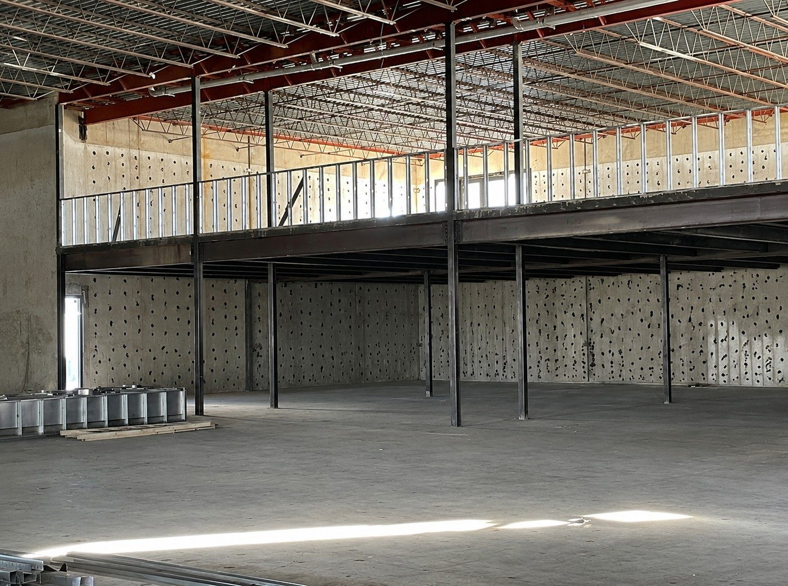
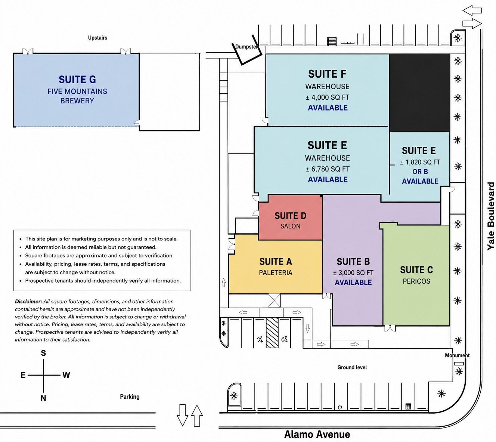
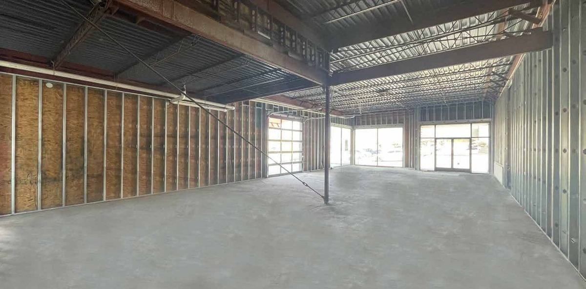
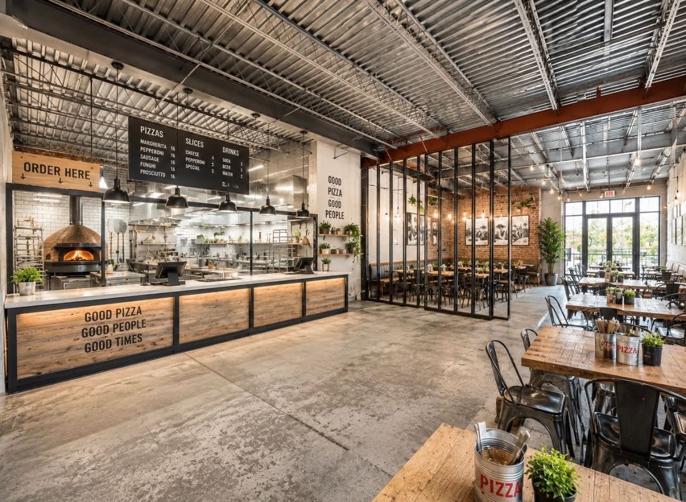
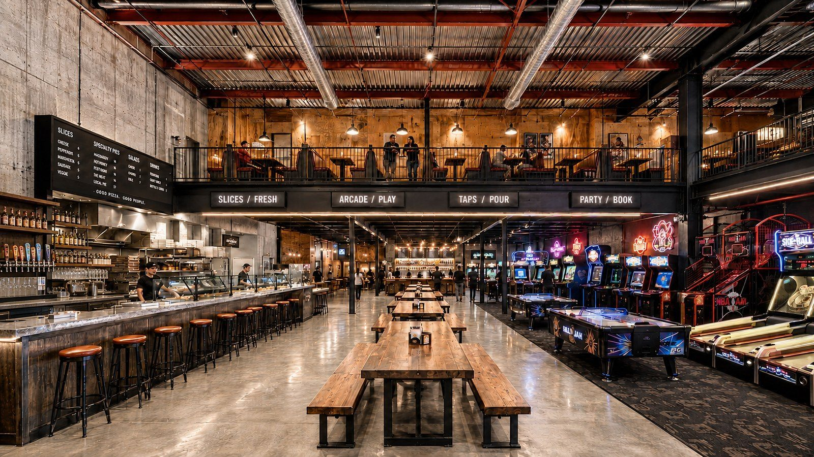
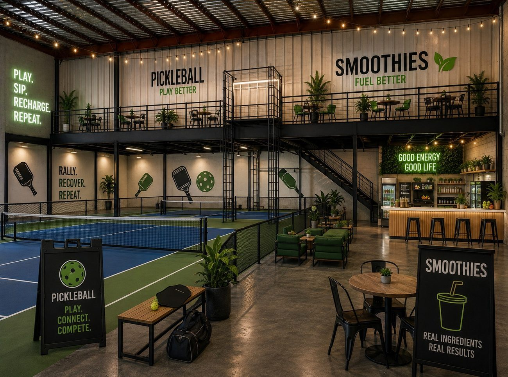
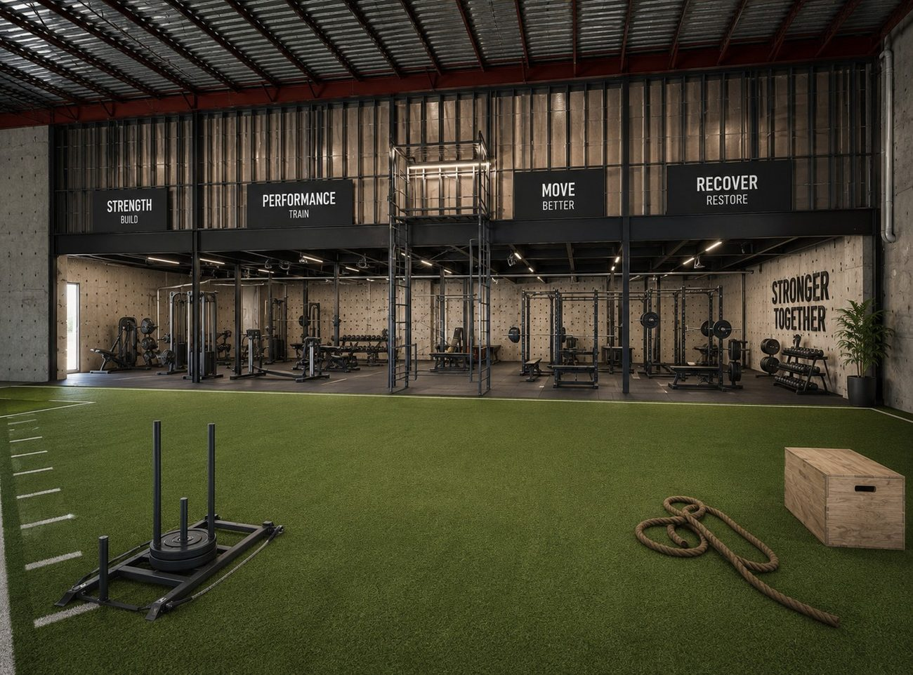
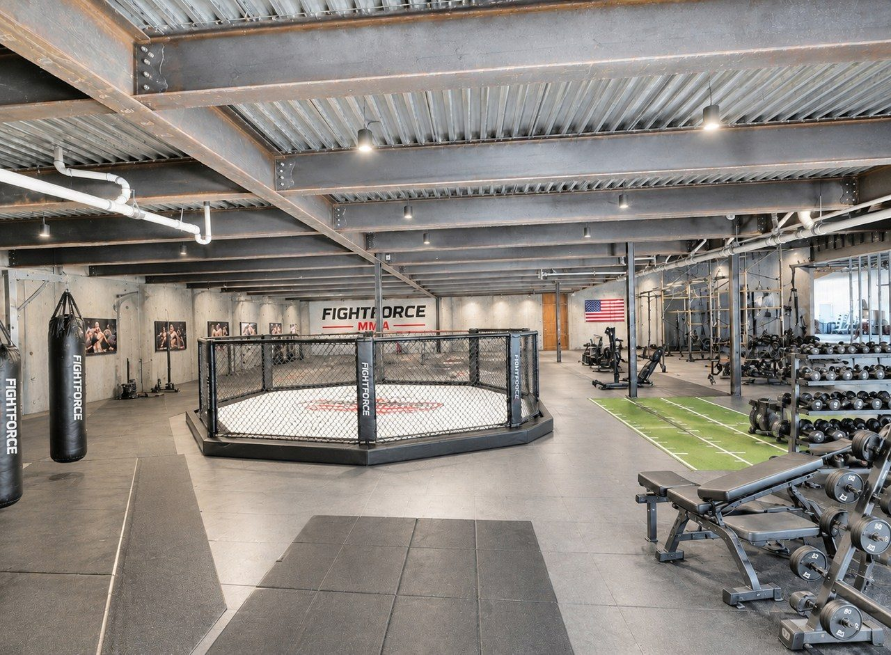
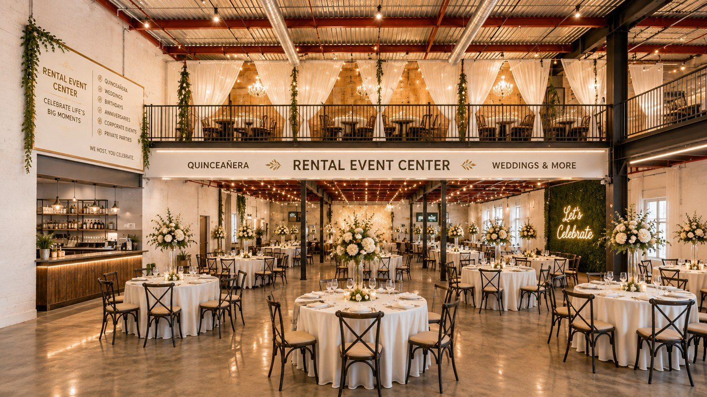
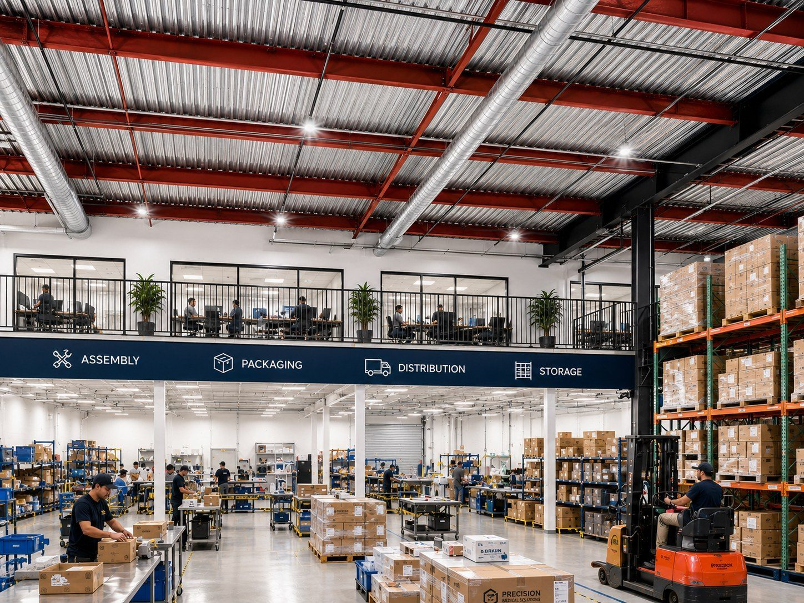

Space for Lease at Yale Landing
±3,550 SF of inline retail and ±12,600 SF of column-free flex space at 2500 Yale Blvd SE — 1.2 miles from the Albuquerque Sunport, 400 feet from Kirtland Air Force Base, with 480 shared parking spaces and established food tenants already drawing daily traffic.
The Full Brochure
Yale Landing — For Lease
Can't see the brochure? Open the PDF directly — 12 pages covering both suites, the site plan, the tenant line-up and the trade area.
Availability
Two Spaces


Suite B · Retail
Inline Retail + Patio
±3,550 SF · 3,000 interior + 550 patio
Sits between Perico's and Paletería Cuauhtémoc with its own exclusive outdoor patio. Shell condition — build it to suit.
- 10′–14′ finished ceilings
- Single ADA-compliant restroom
- 5-ton refrigerated HVAC
- 200-amp, 3-phase electrical
- North façade signage plus the Yale Blvd monument sign
- Build-to-suit or tenant improvement allowance
Suited to Pizza · Asian · Fast-casual · Café · Bar · Retail · Medical · Office
Suite E + F · Flex
Flex Space
±12,600 SF · divisible from ±4,000 SF
A 20-foot clear ceiling through the centre with no interior columns, tilt-up concrete perimeter walls, and an adjacent patio.
- 20′ clear centre span, 10′–16′ elsewhere
- Single ADA restroom
- 200-amp, 3-phase service
- 5-ton packaged rooftop HVAC
- 10′×10′ grade-level overhead door can be added
- Adjacent patio up to ±1,400 SF
- Demises as Suite F ±4,000 SF + Suite E ±6,780 SF + a ±1,820 SF bay
Suited to Restaurant + games · Fitness · Pickleball · Event space · Showroom · Flex · Light industrial
Imagine Your Concept Here
What These Spaces Could Be
Concepts drawn up for the available suites. None are committed — they show what the volume and ceiling height can carry.







Artist's conceptual renderings — illustrative only. Not a representation of existing improvements or committed tenants.
Office (505) 881-4529. Call for rates, terms, floor plans and a tour.
The Trade Area
Why This Corner
- Kirtland AFB
- 400 feet
- Sunport Terminal
- 1.2 mi
- Sandia National Labs
- 1.85 mi
- Interstate 25
- 1.9 mi
- UNM
- 2.0 mi
- The Pit + Isotopes
- 2.2 mi
- Yale Blvd SE
- 13,970 VPD
- Gibson Blvd SE
- 33,200 VPD
Yale Landing sits between the airport, the base and the labs, surrounded by more than 2,000 hotel rooms and a large daytime workforce — in an area with relatively few restaurant, entertainment and service options for the activity it supports.
The Numbers
Property Facts
Areas are approximate and subject to verification. Availability, terms and specifications are subject to change or withdrawal without notice. See the Disclaimer.
Questions
Leasing FAQ
How much space is available at Yale Landing?
Two suites, totalling roughly ±16,150 SF. Suite B is ±3,550 SF of inline retail with its own patio. Suite E + F is ±12,600 SF of column-free flex space and can be divided from about ±4,000 SF.
Can Suite E + F be subdivided?
Yes. It demises as Suite F at ±4,000 SF, Suite E at ±6,780 SF, and a ±1,820 SF bay fronting Yale Blvd that can go with either Suite E or Suite B. Ownership will get creative on configuration.
What is the ceiling height?
Suite E + F has a 20-foot clear ceiling through the centre with no interior columns, and 10 to 16 feet elsewhere. Suite B has 10- to 14-foot finished ceilings.
How close is it to the Albuquerque airport?
1.2 miles from the Albuquerque International Sunport — under a three-minute drive. It is also 400 feet from Kirtland Air Force Base, 1.85 miles from Sandia National Laboratories and 1.9 miles from Interstate 25.
Is there parking?
480 shared surface spaces, a ratio of about 20.35 per 1,000 SF. That is unusually high for an infill site and supports high-occupancy restaurant, fitness and entertainment uses.
What uses are permitted?
Zoning is NR-BP. Suite B suits a restaurant, café, bar, retail, medical or office use. Suite E + F suits an event centre, gym, entertainment or games concept, showroom, flex space, or light industrial and distribution.
Is a tenant improvement allowance available?
Both suites deliver in shell condition. Build-to-suit arrangements and TI allowances are negotiable for a qualified operator.
Who do I contact?
Ted Bustos at Coe Properties — (505) 948-9171, call or text. Office (505) 881-4529. Ask for rates, terms, floor plans and a tour.